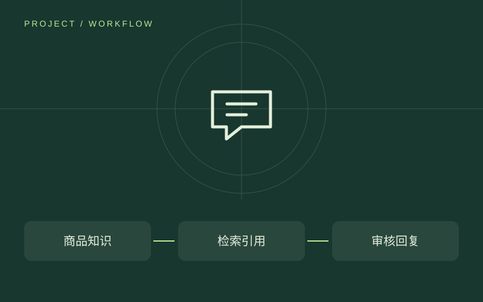
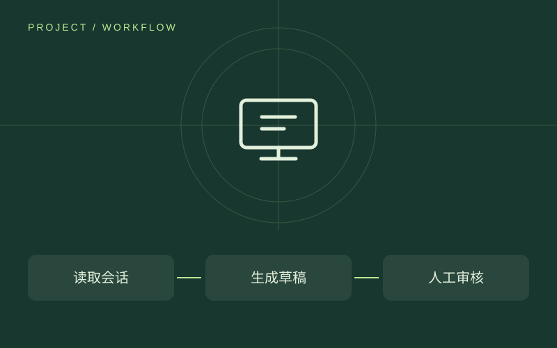
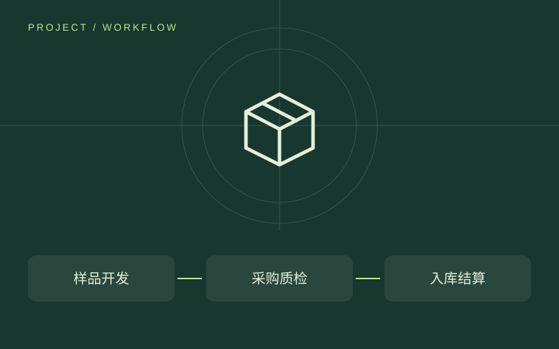
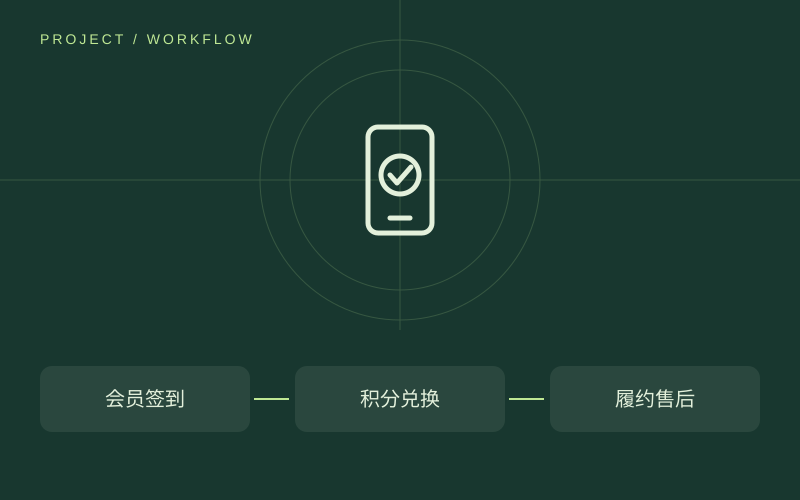
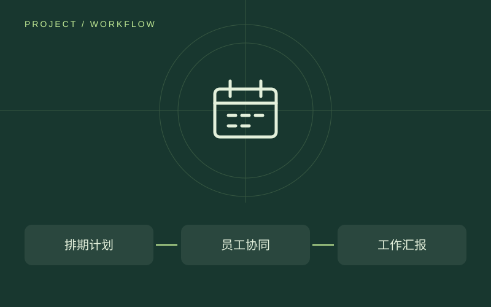
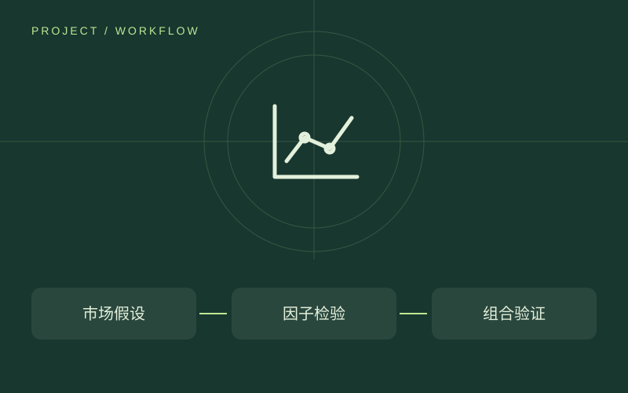
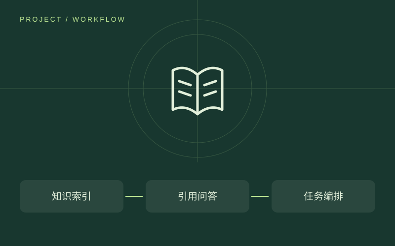
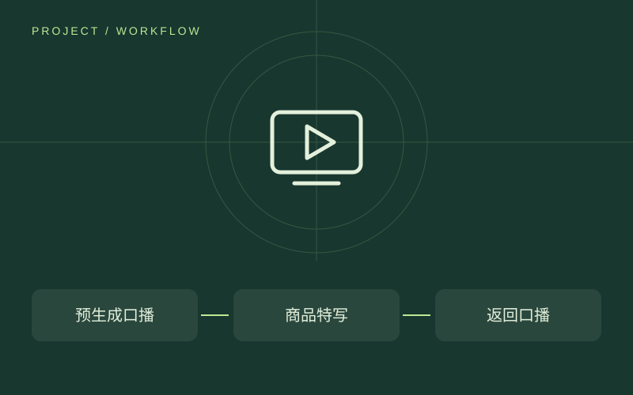
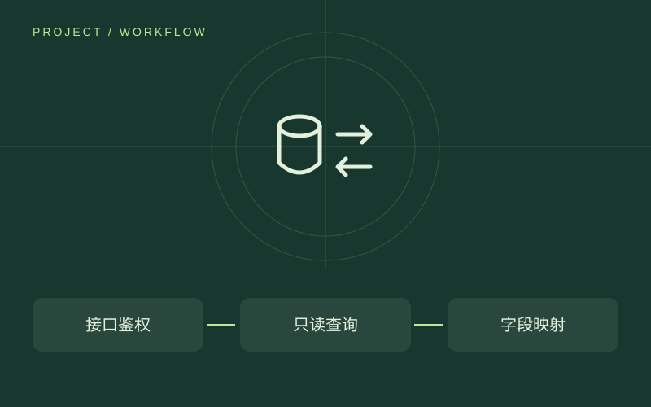

知识驱动客服
Rulio以商品知识库为基础，让客服回答有据可查。围绕店铺规则、知识管理与回复审核，探索多平台接待。
解决什么问题
客服回答缺少依据，商品信息散落在不同位置。
主要功能
店铺规则管理、商品知识存储、采集调度接口、知识库工作台；多平台客服接入仍在规划。
技术栈
JavaPythonVueEmbedding
开发中；真实平台接入待完成让知识、流程与创作连接起来。我的项目实践，发生在 AI 应用、业务系统与数据工具的交汇处。
浏览项目AI 应用 / 业务系统 / 数据与创作
实现与探索，分别记录。
当前显示 12 个项目

以商品知识库为基础，让客服回答有据可查。围绕店铺规则、知识管理与回复审核，探索多平台接待。
客服回答缺少依据，商品信息散落在不同位置。
店铺规则管理、商品知识存储、采集调度接口、知识库工作台；多平台客服接入仍在规划。

连接本地桌面会话、知识问答与人工审核，把生成回复和实际发送分开处理。
重复回复耗时，模型草稿与实际发送容易混在一起。
指定私聊读取、知识问答、回复草稿、人工审核与策略控制、发送前复核。

围绕独立外贸工作流，将客户线索、供应商研究、报价与消息草稿组织在同一工作台。
个人外贸线索、供应商资料和报价分散，跟进上下文容易丢失。
客户与供应商档案、选品研究、出口报价、物流报价对比、消息草稿和流程记录。

从选款、样品开发到采购、入仓质检与供应商结算，串联供应链中的流程与记录。
样品、采购、质检和结算由不同岗位接力，记录难以串联。
供应商与款式档案、样品开发节点、采购订单、预约送货、入仓质检与供应商结算。

基于模块化后端和管理界面，构建服装供应链业务的管理基础与系统权限能力。
服装开发资料和审批分散，难以追溯审款、成本与生产流转。
样品池、审款确认、产品资料与 BOM、核价议价、采购跟单、库存质检及对账。

连接会员签到、积分兑换、库存、履约与售后，配套运营后台和共享业务接口。
会员积分、兑换库存与售后分别记账，容易出现扣分和库存不一致。
签到与积分流水、商品规格与库存、幂等兑换、履约售后、优惠券和角色权限。

面向排期、工作汇报和权限协同，组织管理后台与员工工作台，并提供模型配置能力。
直播排期、工作汇报和员工权限缺少统一入口。
排期日历与表格、工作汇报、角色权限、身份映射、凭证中心和模型配置。

从自然语言市场假设出发，以时间对齐的数据检验因子，记录样本外证据与组合验证。
投资想法难以重复验证，历史数据还可能提前使用未公开信息。
自然语言假设、公告时间对齐、单因子样本外检验、因子评级、组合验证与数据增量更新。

基于现有开源画布项目开展扩展，将图片、视频与多模型调用组织成可连接的创作流程。
创作素材与多模型操作散落在不同工具，流程难以复用。
节点式创作、多模型接入、图片和视频处理、本地 ComfyUI 工作流与素材工具扩展。

探索知识检索、引用核验和任务编排，通过分离业务、知识与模型服务维护系统边界。
知识回答缺乏引用，业务、知识索引与模型调用边界不清晰。
知识检索与引用核验、任务编排、知识版本管理、业务与知识服务隔离。

研究预生成口播、商品特写和顾客问题的衔接，设计可由人工接管的直播播放流程。
希望在连续口播中响应商品问题，同时保留人工审核与接管。
规划功能：审核口播、预生成视频、播放队列、商品特写切换与问题插播；尚未实现应用。

以只读查询验证库存与款式接口，梳理不同系统间的商品编码、鉴权和字段映射。
不同库存系统的商品编码与鉴权方式不同，数据对接前缺少验证。
只读库存与款式查询、接口鉴权、字段映射、结果记录、失败与空结果区分。
我关注 AI 如何融入日常工作，也关注一个系统怎样把复杂流程表达清楚。这里记录从知识问答、业务协同到数据研究与创作工具的实践，保留每个项目当前的边界。
AI 应用与知识检索 · 全栈业务开发 · 数据与工具实践
部分业务项目以通用名称展示。内容为项目概览，不包含业务数据；开源扩展项目不作为原创底层框架展示。